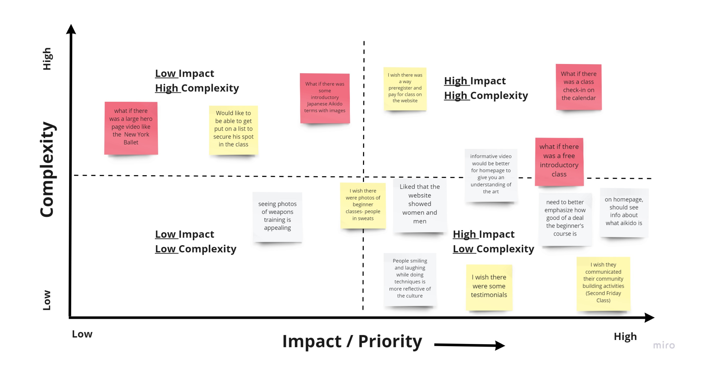
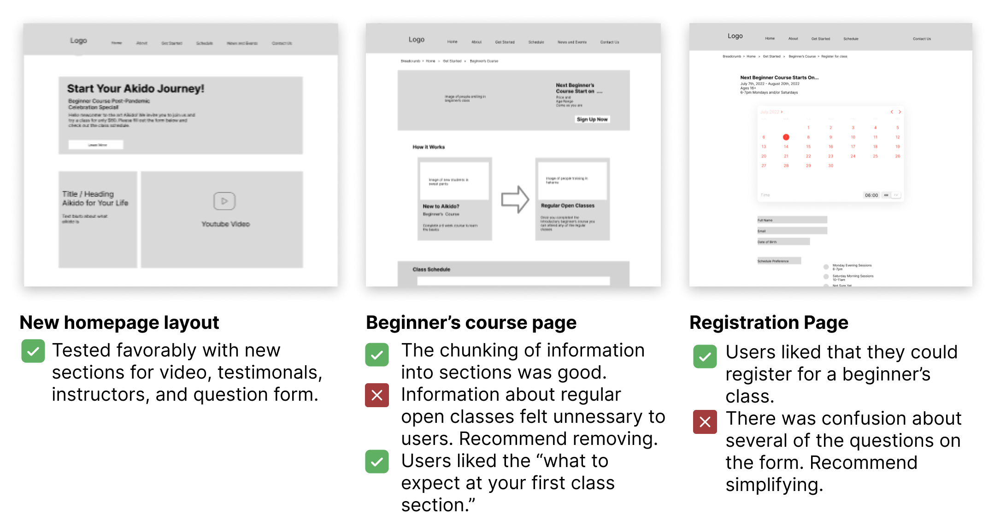

Nashville Aikikai Website Redesign

Katie Struk
Bonnie Gregory
Anyssa Barbour
3 weeks
I approached the stakeholders of a small non-profit dojo in East Nashville and offered the services of my student team to redesign their current website to create a more useful user friendly experience and help them bring in new attendees to beginner classes.
My responsibilities included user research, copy writing, information architecture, prototyping, testing, and visual design. Throughout the process I collaborated with teammates and stakeholders. At the conclusion of the project I presented recommendations to stakeholders and am also helping them move forward with building the new website.
Want to increase attendance at their beginner’s level classes.
Want to discover a new movement practice and they need to answer their questions before choosing one.
Intended as a place to inform the community about Nashville Aikikai and act as a bridge of information to bring new people in.
However, users feel frustrated and uncertain when trying to learn about classes on the site because they can’t find answers to their questions
Provide users with better information and a more structured accessible layout that will empower them to discover answers to their questions and alleviate uncertainity and doubt about joining a new dojo.

Why? To align the team’s goals and focus our efforts on a the mvp keeping in mind our short time frame of 3 weeks. What aspect of the website could we improve first to give our stakeholders the most value right now?
2 stakeholders interviews were conducted to align the ux team’s goals with the needs of the organization.
Increase attendance in beginner level classes.
Redesign the website to craft a user friendly and asethetically pleasing experience for users that can also act as a landing from social media.
Needs to be easy to maintain and something that could be created in a hosting site like Wordpress or Squarespace because Nashville Aikikai is run by volunteers.
Differentiate this martial art from the other types of for-profit martial arts studios in the area with a non-competitive inclusive tone.
5 user interviews were conducted as a team.
We targeted people who were totally unfamiliar with aikido, but who participated in other organized movement practices such as yoga studios, cycling classes, etc, because they were likely candidates for attending an aikido class and they were expereinced with the process of having to search online for a new place. In addition, we interviewed someone who was a new member to the dojo to learn their thought process in actually joining Nashville Aikikai.
Understand the thought processes of users when navigating the Nashville Aikikai website.
We asked several questions to assess the priorities of our users when selecting a place to train. Then we had the users get on the Nashville Aikikai website and complete a few tasks to assess what was important in helping them make a decision to attend a class and what caused frustration or confusion.
Users spent a lot of time scrolling up and down on the classes page searching for information and jumping around between pages.
Users who were unfamiliar with aikido had many unanswered questions about what to expect before their first class that left them with feelings of uncertainty.
Users were confused by the explanation of class schedule and what the dues paid for.
Users were uncertain of what the atmosphere, community, and culture were like when exploring the site. Current images were not painting a picture of who the people of the dojo are.
How do people discover Nashville Aikikai?
6 of the 9 current members of the dojo that we surveyed discovered Nashville Aikikai initially through a Google search and then through the website.
This confirms to us the importance of the website as a tool that can bring new people into the dojo.

To pinpoint and define our problem statement and bring focus into what we would be solving, the team collaboratively shared a Google Doc where we gave ourselves 10 minutes to type out several iterations of problem statements.
Then we quietly read each others and highlighted portions of the wording we liked.
Finally, we started talking out what portions worked best and combined a few pieces into several more iterations of the statement and agreed on our final draft.
The Nashville Aikikai website was designed to inform the community about their practice. We have observed that the website isn’t providing the right information for potential students, which may contribute to low attendance in beginner classes.
How might we improve the experience with finding useful information on the Nashville Aikikai website to increase attendance at beginner classes?
Now that the team had identified a user and a problem to work on that could give value to our stakeholders it was time to ideate on solutions.
We opened the floor to open brainstorming with I like, I wish, what if to allow for a flow of ideas.
We had many great ideas but we needed to keep in mind timeline, scope and practicality of ideas before selecting items to focus on. We used a feature prioritization matrix as a tool to talk out what ideas we liked, what was feasible and what was worth pursuing.
We knew that the organization of information was a painpoint to users on the website and that we needed to do cardsorting to analyze and assess where info lived on the site so a quick user flow was made to keep the team focused on our priority of a new prospective member visiting the website.
Card Sorting
Wireframeing
Low Fidelity Prototype Testing Results
High Fidelity Prototype Testing Results
We designed the registration page with stakeholders in mind. Registering keeps users invested in showing up to their first class and results in better attendance.
We kept the designs simple enough that it could easily be built with Wordpress or Squarespace or another tool.
We made the site fresh and kept true to the dojo’s philosophies, aesthetics, and how they wanted to be viewed online.
We realized users had tons of questions that were keeping them from taking a risk and attending their first class. Because of my intimate knowledge of aikido I was able to write a FAQ section and a “What To Know Before Your First Class” section.
Users wanted a clear vision of what this dojo was like before showing up to class, so careful consideration was given to which photos would appear on the website to paint a better picture to users. We also included testimonals and video.
We made it easier to ask questions if there were things we didn’t cover in the FAQ by including the question form on the website.
We kept the most essential information users looked for up front and central. When is class? and How much is it?
I can design creative solutions for your next project.